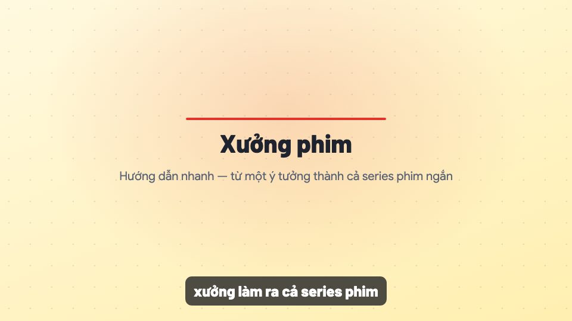
1title6.1s
Chào bạn! Đây là Xưởng phim.
Bạn đưa ý tưởng, xưởng làm ra cả series phim ngắn cho mạng xã hội.
♪ swoosh-up · ding · whoosh

Chào bạn! Đây là Xưởng phim.
Bạn đưa ý tưởng, xưởng làm ra cả series phim ngắn cho mạng xã hội.
♪ swoosh-up · ding · whoosh
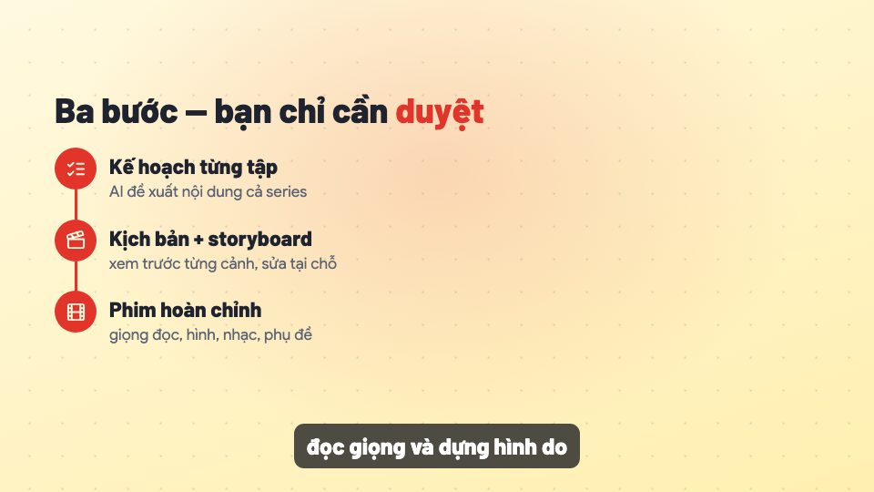
Bạn chỉ cần duyệt ở ba bước:
kế hoạch từng tập,
kịch bản kèm storyboard,
và phim hoàn chỉnh. Phần viết do AI lo, đọc giọng và dựng hình do máy làm.
♪ pop · whoosh
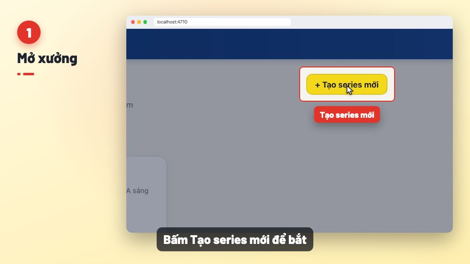
Mở trình duyệt, vào trang của xưởng: các series của bạn nằm ở đây.
Bấm Tạo series mới để bắt đầu.
♪ whoosh-soft · click · whoosh
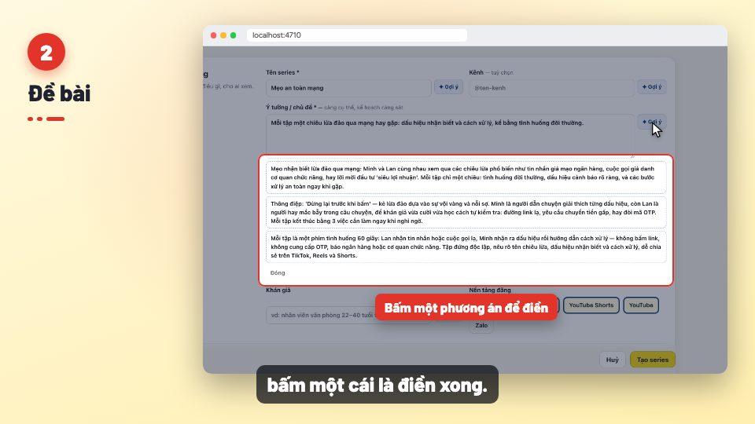
Chỉ cần tên và ý tưởng, các mục khác đã có sẵn lựa chọn.
Bí ý tưởng? Bấm nút Gợi ý cạnh ô nhập.
AI đưa ba phương án, bấm một cái là điền xong.
♪ whoosh-soft · click · whoosh
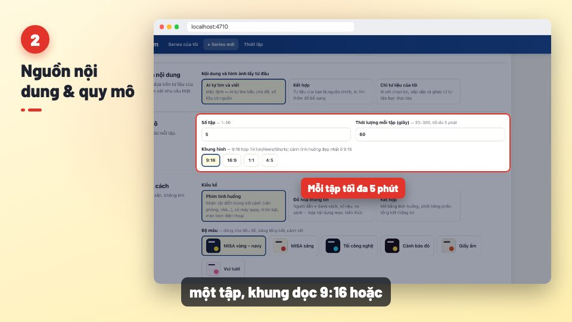
Chọn nguồn nội dung: để AI tự tìm, kết hợp, hay chỉ dùng tư liệu Word, PDF của bạn.
Đặt số tập, thời lượng tối đa năm phút một tập, khung dọc 9:16 hoặc ngang 16:9.
♪ whoosh · whoosh-soft
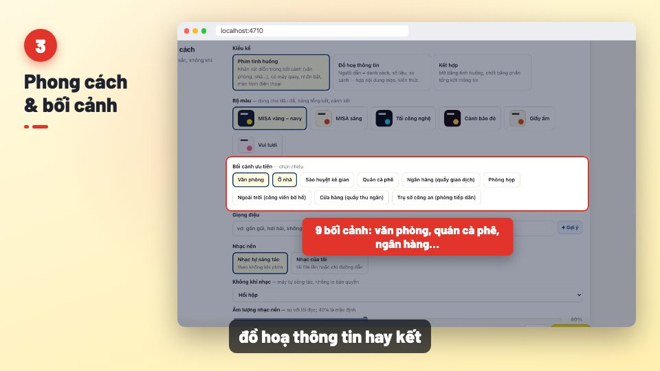
Chọn kiểu kể: phim tình huống, đồ hoạ thông tin hay kết hợp, cùng bộ màu cho cả series.
Chọn bối cảnh: văn phòng, ở nhà, quán cà phê, ngân hàng, phòng họp, công viên, cửa hàng, cả trụ sở công an.
♪ whoosh-soft · whoosh
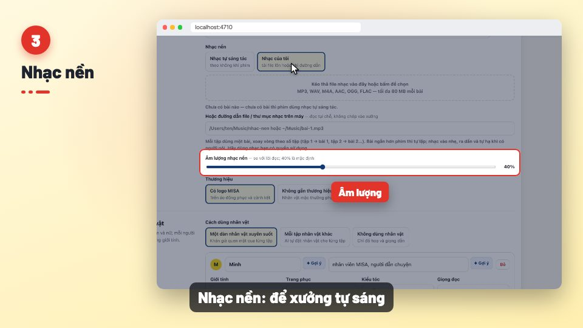
Nhạc nền: để xưởng tự sáng tác theo không khí phim, hoặc dùng nhạc của bạn.
Tải file nhạc lên, hoặc trỏ tới cả thư mục nhạc trên máy, mỗi tập lấy một bài.
Kéo thanh âm lượng; khi có lời đọc, nhạc tự nhỏ xuống.
♪ whoosh · click · whoosh-soft
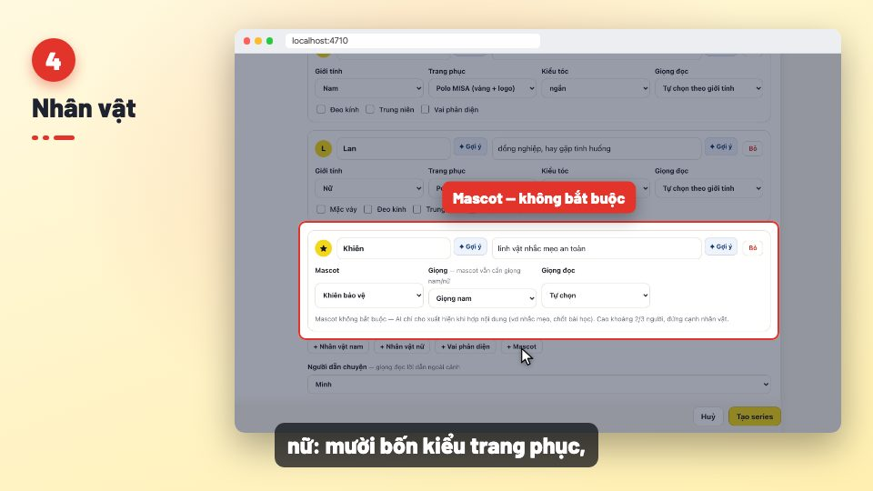
Khai báo nhân vật nam, nữ: mười bốn kiểu trang phục, gần hai mươi kiểu tóc, mỗi người một giọng đọc.
Thích thì bấm thêm Mascot:
khiên bảo vệ, rô bốt trợ lý, hoặc ảnh linh vật của riêng bạn.
♪ whoosh-soft · click · whoosh
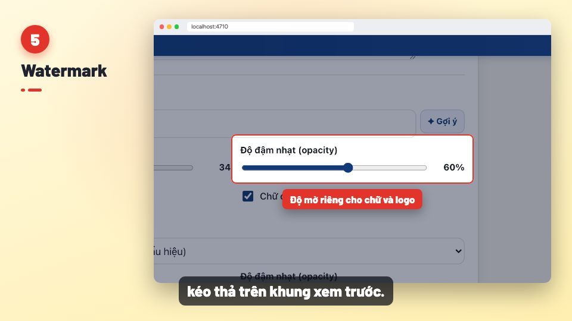
Muốn gắn thương hiệu? Bật chữ hoặc logo watermark, kéo thả trên khung xem trước.
Chỉnh độ mờ riêng cho chữ và logo, chọn logo MISA hay logo bạn tải lên.
♪ whoosh-soft · whoosh
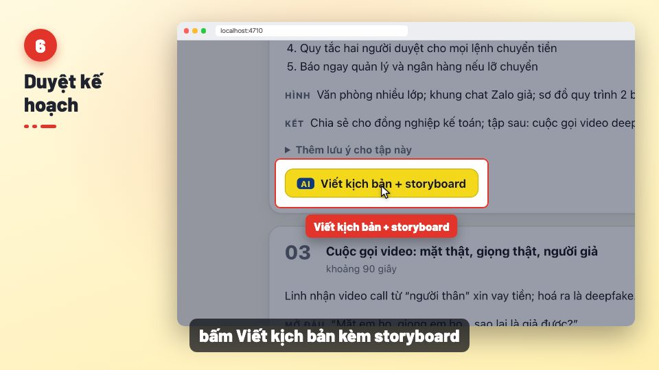
Tạo series xong, bấm Lập kế hoạch. Trang luôn cho biết bạn đang ở bước nào.
Mỗi tập có tóm tắt, câu mở đầu, các ý chính và lời kết.
Ưng tập nào, bấm Viết kịch bản kèm storyboard cho tập đó.
♪ whoosh · whoosh-soft · click
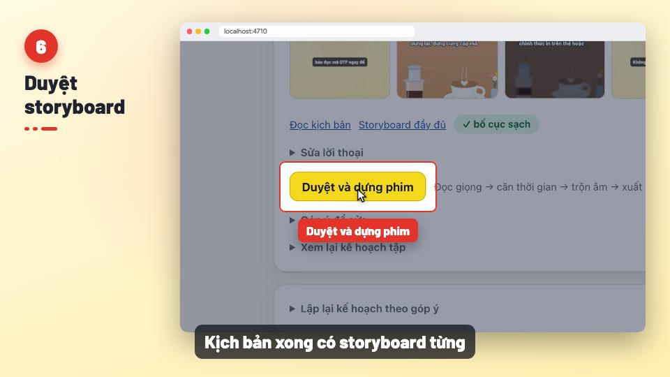
Kịch bản xong có storyboard từng cảnh để xem trước.
Sửa lời thoại ngay tại chỗ, hoặc ghi góp ý để AI sửa lại.
Ưng rồi thì bấm Duyệt và dựng phim.
♪ whoosh · whoosh-soft · click
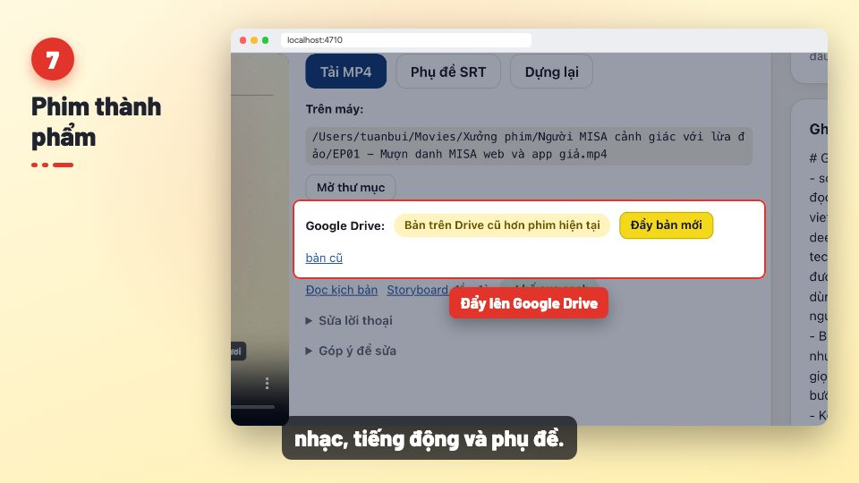
Vài phút sau phim đã sẵn trên trang, có giọng đọc, nhạc, tiếng động và phụ đề.
Tải MP4 và phụ đề, phim cũng được chép sẵn vào thư mục phim trên máy.
Bấm một nút để đẩy lên Google Drive. Nhiều tập đã duyệt thì xếp hàng, máy dựng lần lượt.
♪ whoosh-soft · whoosh
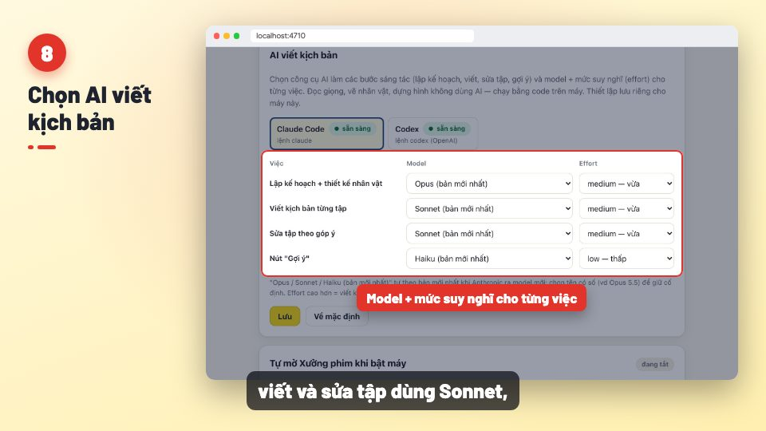
Trong Thiết lập, chọn AI viết kịch bản: Claude hoặc Codex.
Mỗi việc chọn model và mức suy nghĩ riêng: lập kế hoạch dùng Opus, viết và sửa tập dùng Sonnet, gợi ý dùng Haiku.
♪ whoosh · whoosh-soft
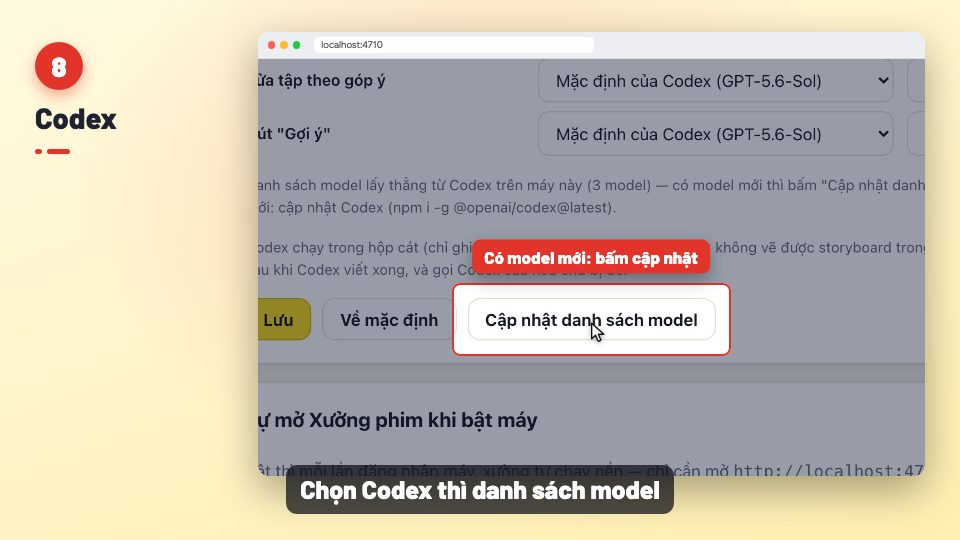
Chọn Codex thì danh sách model lấy thẳng từ Codex trên máy bạn.
Có model mới, bấm Cập nhật danh sách là chọn được ngay.
♪ whoosh-soft · click · whoosh
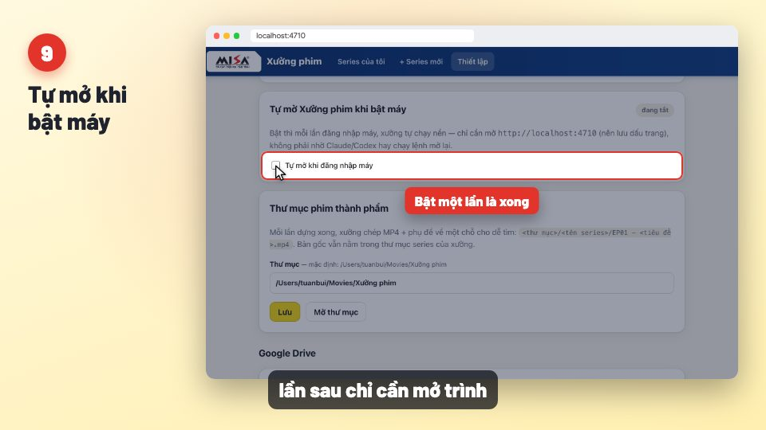
Bật Tự mở khi bật máy: lần sau chỉ cần mở trình duyệt vào trang xưởng, không phải chạy lệnh gì.
♪ whoosh
Vậy là xong một vòng. Bắt đầu series đầu tiên của bạn ngay hôm nay nhé!
♪ whoosh · chime